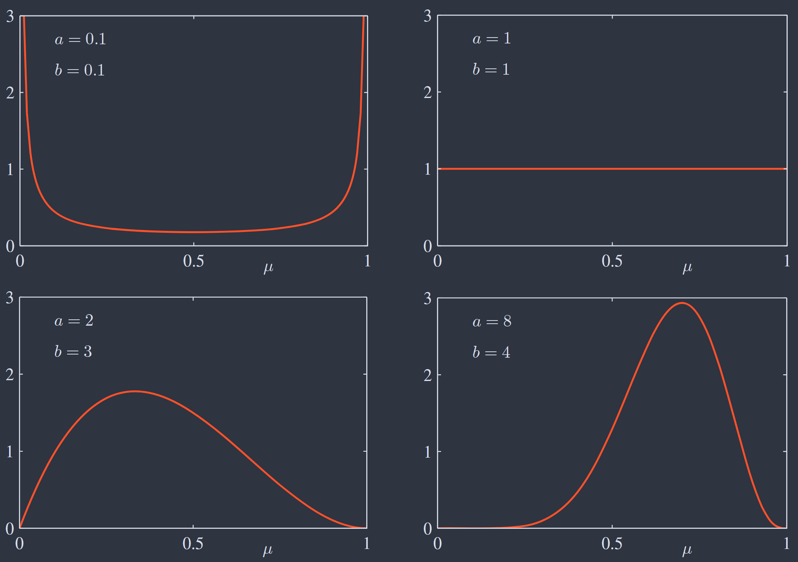
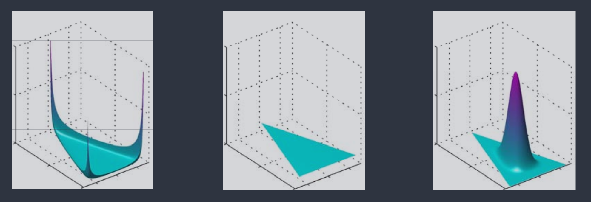

Chapter II Probability Distribution
约 1503 个字 2 张图片 预计阅读时间 5 分钟
As well as being of great interest in their own right, these distributions can form building blocks for more complex models and will be used extensively throughout the book.
本章假设数据点独立同分布（i.i.d）．
1. BINARY VARIABLES¶
Bernoulli & Binomial Distribution¶
Bernoulli Distribution
考虑二元随机变量 \(x \in \{0,1\}\)，其分布如下：
称之为 伯努利分布（Bernoulli Distribution），表达式及矩值如下：
假设数据集 \(\mathcal{D}=\{x_{1},\dots,x_{N}\}\) 从分布 \(p(x\vert \mu)\) 中采样，似然函数计算如下：
极大似然估计如下：
令 \(m = x_{1}+\cdots+x_{N}\)，即 \(N\) 个数据点中 \(x=1\) 的观测次数．如上 \(\mu_{\text{ML}}\) 即为数据集中 \(x=1\) 的观测比例．此外，可以研究 \(m\) 的分布：
Binomial Distribution
固定 \(N\)，由式 \(\eqref{star}\) 知 \(p(m\vert N,\mu) \propto \mu^m(1-\mu)^{N-m}\) ，系数为 “N选m” 的方式数．
称之为 二项分布（Binomial Distribution），表达式及矩值如下：
Beta Distribution¶
如上极大似然给出的参数估计对小数据集有严重过拟合问题，因此需寻求合适的先验进行贝叶斯式处理．
由式 \(\eqref{star}\) 可知，似然 \(\propto \mu^x(1-\mu)^{1-x}\)，若有先验 \(\propto \mu(1-\mu)\)，则后验 \(\propto \mu(1-\mu)\)，即与先验函数形式相同．称之为 共轭性（Conjugacy）．
Beta Distribution
如上构造的先验分布称为 Beta 分布（Beta Distribution），表达式及矩值如下：
不同超参数 \(a,b\) 值对应的 Beta 分布示意图如下：

{kind=link}
令 \(l=N-m\)，计算后验如下：
对于该形式，有如下三种启发：
-
超参 \(a,b\) 可解释为 \(x=0\) 和 \(x=1\) 的“有效观测数”．
如上先验到后验的分布变化，即将观测到的 \(m,l\) 值添加到超参 \(a,b\) 上．因此超参 \(a,b\) 可视为经验中对两种情况的观测数量．
-
后验可视为新数据的先验，进行 序列学习（Sequential Learning）．
在实时学习、大数据集、数据持续流入且必须在看到全部数据前做出预测的场景中，可使用序列方法．
-
随观测数的提高，后验会越来越尖锐．
由 Beta 分布示意图 或 \(\operatorname{var}[\mu]\) 形式可以看出，当 \(a,b\) 增大时，分布会越来越集中．实际上，这是贝叶斯学习的一般性质：当越来越多数据被观测，后验分布的不确定性会稳步下降．
考虑参数 \(\mathrm{\theta}\) 的一般贝叶斯推断，数据集为 \(\mathcal{D}\)，有如下两个关系式：
\[ \begin{align} \mathbb{E}_{\boldsymbol{\theta}}[\boldsymbol{\theta}] &= \mathbb{E}_{\mathcal{D}}[\mathbb{E}_{\boldsymbol{\theta}}[\boldsymbol{\theta}\vert \mathcal{D}]] \tag{1} \label{1}\\ \operatorname{var}_{\boldsymbol{\theta}}[\boldsymbol{\theta}] &= \mathbb{E}_{\mathcal{D}}[\operatorname{var}_{\boldsymbol{\theta}}[\boldsymbol{\theta}\vert \mathcal{D}]] + \operatorname{var}_{\mathcal{D}}[\mathbb{E}_{\boldsymbol{\theta}}[\boldsymbol{\theta}\vert \mathcal{D}]] \tag{2} \label{2} \end{align} \]\(\eqref{1}\) 式表示：在数据分布上平均来看，后验均值等于先验均值；
\(\eqref{2}\) 式表示：在数据分布上平均来看，后验方差小于先验方差（不确定度降低）．并且后验均值方差越大（数据信息更多），后验方差就会越小（不确定度更低）．
2. MULTINOMIAL DISTRIBUTION¶
考虑 \(K\) 维随机变量 \(\mathbf{x} \in \{0,1\}^K\) 且 \(\sum_{k=1}^K x_{k} = 1\)．记 \(p(x_{k}=1)=\mu_{k}\)，则 \(\mathbf{x}\) 的分布如下：
\(\mathbf{x}\) 可视为 Bernoulli Distribution 的推广，即有 \(K\) 个可取值．其矩值如下：
假设数据集 \(\mathcal{D}=\left\{ \mathbf{x}_{1},\dots,\mathbf{x}_{N} \right\}\) 从分布 \(p(\mathbf{x}\vert \boldsymbol{\mu})\) 中采样，似然函数计算如下：
极大似然估计如下：
其中 \(m_{k} = \sum_{n=1}^N x_{nk}\) ，表示 \(x_{k}=1\) 的观测次数，\(\mu_{k}^{\text{ML}}\) 即为 \(x_{k}=1\) 的观测比例．同理，可以研究 \((m_{1},\dots,m_{K})\) 的分布：
Multinomial Distribution
固定 \(N\)，由式 \(\eqref{star2}\) 知 \(p(m_{1},\dots,m_{K}\vert N,\boldsymbol{\mu}) \propto \prod_{k=1}^K \mu_{k}^{m_{k}}\) ，系数为 “N分K组” 的方式数：
称之为 多项分布（Multinomial Distribution），表达式如下：
Dirichlet Distribution¶
同 Beta Distribution ，共轭先验有如下形式：
Dirichlet Distribution
如上共轭先验称为 Dirichlet 分布（Dirichlet Distribution），表达式如下：
不同超参 \(\{\alpha_{k}\}\) 对应的 Dirichlet 分布示意图如下（从左到右依次为 \(\{\alpha_{k}\} = 0.1, \{\alpha_{k}\} = 1, \{\alpha_{k}\} = 10\)）：

{kind=link}
计算后验如下：